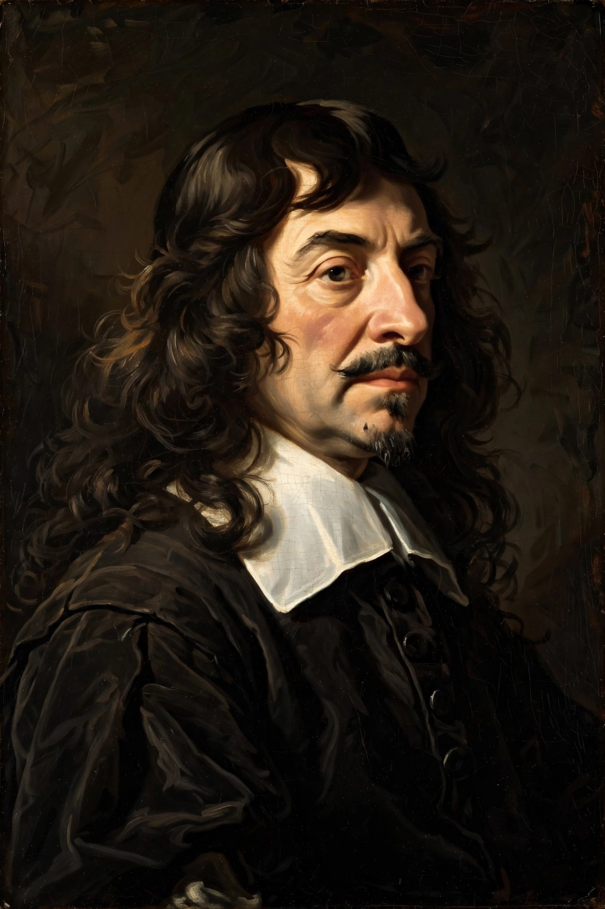

From Wikipedia, the free encyclopedia
| René Descartes | |
|---|---|
| Born | 31 March 1596, La Haye en Touraine, France |
| Died | 11 February 1650, Stockholm, Sweden |
| Era | 17th-century philosophy |
| Main interests | Epistemology, metaphysics, mathematics |
| Notable ideas | Cogito ergo sum; Cartesian dualism; coordinate geometry |

René Descartes (1596–1650) was a French philosopher, scientist and mathematician, often called the father of modern Western philosophy. In the Meditations on First Philosophy (1641) he subjected all his beliefs to methodical doubt, arriving at the indubitable cogito ergo sum — 'I think, therefore I am' — and building knowledge anew on that foundation. He argued that mind and body are distinct substances, a view known as Cartesian dualism.
Descartes was educated by Jesuits at La Flèche and studied law at Poitiers before travelling as a gentleman soldier. Settling in the Dutch Republic in 1628, he wrote his major works there, including the Discourse on the Method (1637), published in French with essays on optics, meteorology and geometry. Invited to Stockholm by Queen Christina of Sweden, he died of pneumonia in February 1650, reputedly worn down by lessons at five in the morning in a freezing library.
Descartes' rationalism held that knowledge can be founded on innate ideas grasped by reason, and he sought certainty through clear and distinct ideas guaranteed by a non-deceiving God. His metaphysics distinguished thinking substance (res cogitans) from extended substance (res extensa) and located their interaction problematically in the pineal gland. In mathematics he created analytic geometry by joining algebra to geometry — the origin of the Cartesian coordinate system — laying groundwork for calculus. His mechanistic physics was later superseded by Newtonian physics, but his framing of the mind–body problem still structures debate.
Epistemology, Rationalism, Philosophy of mind, Cogito ergo sum